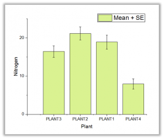
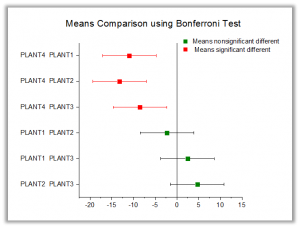
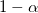

Weitere relevante Videos: Varianzanalyse (ANOVA)
Weitere relevante Videos: Varianzanalyse (ANOVA) |
 |
 |
Die faktoriellen ANOVA-Modelle betrachten einen vollständig randomisierten Versuchsplan für ein Experiment.
Origin unterstützt die folgenden faktoriellen ANOVA-Modelle.
| Versuchspläne | Details |
|---|---|
| Einfach | vergleicht drei oder mehr Stufen innerhalb eines Faktors. |
| Zweifach | vergleicht den Effekt von mehreren Stufen zweier Faktoren; wird verwendet, um die Haupteffekte von und Wechselwirkungen zwischen zwei Faktoren zu analysieren. |
| Dreifach (nur Pro) | testet auf Effekte der Wechselwirkung zwischen drei unabhängigen Variablen auf eine stetige abhängige Variable (d.h., falls eine dreifache Wechselwirkung existiert). |
Zusätzlich zur Varianzanalyse unterstützt Origin verschiedene Methoden für Mittelwertvergleiche und zur Analyse der tatsächlichen und der hypothetischen Trennschärfe.
Das ANOVA-Modell hat folgende Annahmen:
Der Test auf Normalverteilung und der Homogenitätstest (Levenes Test) können verwendet werden, um die Annahmen zu bestätigen. Bitte lesen Sie weitere Informationen unter Annahmen.
Multiple Vergleichstests werden gemeinhin in einer ANOVA genutzt, nachdem ein signifikantes Omnibustestergebnis ermittelt wurde. Das signifikante ANOVA-Ergebnis schlägt vor, dass die globale Nullhypothese H0 zurückgewiesen wird. Die Hypothese H0 besagt, dass die Mittelwerte über die zu vergleichenden Gruppen die gleichen sind. Multiple Vergleichstest werden verwendet, um zu bestimmen, welche Mittelwerte sich unterscheiden.
Origin bietet sieben verschiedene Methoden für den Mittelwertevergleich. Sie umfassen Tukey, Bonferroni, Dunn-Sidak, Fisher LSD, Scheffe, Holm-Bonferroni und Holm-Sidak.
| Tukey | Die Tukey-Methode prüft den gesamten Fehler 1. Art. Wenn Tukey verwendet wird, ist das gesamte Konfidenzniveau  mit gleichen Stichprobenumfängen, das heißt, das Risiko eines Fehlers 1. Art liegt genau bei ; bei ungleichen Stichprobenumfängen ist das Risiko eines Fehlers 1. Art kleiner als . ; bei ungleichen Stichprobenumfängen ist das Risiko eines Fehlers 1. Art kleiner als . |
|---|---|
| Bonferroni | Die Bonferroni-Method prüft den gesamten Fehler 1. Art und ist konservativer als Tukey. Die Methode wird im Allgemeinen für alle paarweisen Vergleichstests verwendet. |
| Fisher LSD | Der Fisher-LSD-Test prüft nicht, den gesamten Fehler 1. Art. Daher sollte er nur für signifikante gesamte F-Tests und eine kleine Anzahl von Vergleichen verwendet werden. |
| Scheffé | Wenn die Anzahl der Vergleiche klein ist, ist Scheffé sehr konservativ (mehr als Bonferroni). Scheffé ist leistungsstärker in Fällen von komplexen multiplen Vergleichen, für die es dann auch entsprechend verwendet wird. |
| Dunn-Sidak | Dies ist eine leistungsstärkere Methode als der Dunnett-Test, insbesondere wenn die Anzahl der Vergleich hoch ist. |
| Holm-Bonferroni | Diese Methode ist weniger konservativ und dafür leistungsstärker als die Bonferroni-Methode. Dadurch wird die Chance größer, Nullhypothesen mit der Bonferroni-Holm-Methode zurückzuweisen. |
| Holm-Sidak | Die Methode ist leistungsstärker als der Holm-Test. Sie kann jedoch nicht dazu verwendet werden, eine Reihe von Konfidenzintervallen zu berechnen. |
Wenn der Vergleichsmodus sich dahingehend ändert, das jeder Mittelwert mit einem Kontrollwert (Referenzstandard) verglichen werden soll, stellt Origin für diesen Modus die Dunnett-Methode zur Verfügung. Dies ist eine gängige statistische Methode für den Mehrfachvergleich und wurde speziell für paarweise Vergleiche zwischen mehreren Behandlungsgruppen und einer einzelnen Kontrollgruppe entwickelt.
Die Trennschärfeanalyse berechnet die tatsächliche Trennschärfe für die Stichprobendaten. Dadurch erhalten Sie die Wahrscheinlichkeit von %, eine Differenz zu erkennen. Außerdem werden Sie bei der Berechnung der hypothetischen Trennschärfe unterstützt, wenn zusätzliche Stichprobenumfänge festgelegt werden.
Die fehlenden Werte in dem Datenbereich werden aus der Analyse ausgeschlossen.
Ab Origin 2015 werden fehlende Werte im Gruppierungsbereich und die entsprechenden Datenwerte aus der Analyse ausgeschlossen. In den älteren Versionen wurden die fehlenden Werte in dem Gruppierungsbereich als eine Gruppe betrachtet.
| Funktionen | Menübefehl |
|---|---|
| Einfach | Statistik: ANOVA: Einfache ANOVA |
| Zweifach | Statistik: ANOVA: Zweifache ANOVA |
| Dreifach (nur Pro) | Statistik: ANOVA: Dreifache ANOVA |
|
Themen, die in diesem Abschnitt behandelt werden:
|